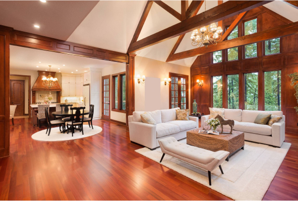

The Hidden Health Cost of Building a House: Why Your Peace of Mind is Worth More Than a Discount
When planning a home, most people focus only on visible numbers — material costs, labor charges, and per-square-foot rates. The assumption is simple: manage things yourself, reduce margins, and save money.
But what often goes unnoticed is the hidden cost — not in rupees, but in your time, health, energy, and peace of mind.
Construction is not just a financial investment. It is an emotional and psychological journey. And when mismanaged, the real cost shows up as stress, fatigue, reduced productivity, and burnout.

The Invisible Cost Nobody Calculates
A self-managed construction project demands continuous involvement — often at a level similar to managing a full-time business. The difference is, there is no structured system, no defined workflow, and no centralized accountability.
This mismatch creates a silent but powerful impact on your daily life.
- Reduced Work Productivity: Frequent calls, site issues, and urgent decisions interrupt your professional focus.
- Poor Sleep Cycles: Worry about delays, costs, and quality affects your mental rest.
- Decision Fatigue: Dozens of small decisions every week exhaust your cognitive capacity.
- Emotional Stress: Constant firefighting creates anxiety and frustration.
- Family Time Loss: Evenings and weekends shift from relaxation to problem-solving.
These are not one-time issues. They accumulate over months, turning what should be an exciting journey into a stressful burden.
How Chaos Builds Up on Site
When planning and execution are not aligned, small inefficiencies quickly snowball into major issues.
A delayed delivery here, a missing material there, or a misunderstood instruction — these may seem minor individually, but together they create a constant cycle of disruption.
- Workers waiting due to missing materials
- Tasks done in the wrong order requiring rework
- Frequent vendor coordination calls
- Lack of clarity on timelines and milestones
- No visibility into cost impact of decisions
Over time, this chaos doesn’t just affect the project — it affects you.
Real-Life Pattern: Small Savings, Large Burnout
Consider a homeowner in Cuttack who began construction with a cost-saving mindset. By directly managing vendors and procurement, the goal was to reduce expenses.
However, within a few months, the reality changed:
- Weekends were spent solving procurement gaps instead of resting
- Evenings were consumed by payment disputes and coordination calls
- Multiple sections required rework due to sequencing errors
- Unexpected expenses disrupted financial planning
- Family routines were affected by constant site involvement
What started as a financial decision gradually turned into physical exhaustion and mental burnout.
The Saansud Planning System
At Saansud Infra, construction is treated as a system-driven process, not a collection of disconnected tasks.
Instead of leaving homeowners to coordinate architects, contractors, and suppliers, an integrated team manages everything from start to finish.
- Pre-Construction Planning: Clear mapping of scope, timelines, and dependencies
- Execution Checklists: Step-by-step control to reduce errors and rework
- Transparent Updates: You stay informed without daily site involvement
- Quality Control Gates: Each stage is verified before moving forward
- Centralized Accountability: One team responsible for complete delivery
This approach ensures that your project progresses smoothly without demanding your constant attention.
Stress Cycle vs Structured Delivery
Self-Managed Cycle
- Unplanned decision overload
- Continuous phone-based coordination
- No clarity on final cost impact
- Frequent stress and fatigue
- Reactive problem-solving
Saansud Execution
- Defined milestones and ownership
- Centralized communication system
- Planned budget tracking
- Reduced stress and involvement
- Proactive execution and control
The true cost of building a home is not just financial.
It is measured in your time, your energy, your health, and your peace of mind.
Why the Right Partner Matters
A professional construction partner does more than deliver a structure. It protects your lifestyle during the journey.
With the right system in place, you don’t have to sacrifice your work performance, personal time, or mental well-being.
Instead, you experience a controlled, transparent, and predictable process — exactly how building your dream home should feel.
Conclusion
If you are planning to build, think beyond immediate savings. Consider the long-term impact on your life.
👉 For financial clarity, visit our Costing & Quote page
👉 For proof of quality, explore our Project Portfolio
Build in a way that protects not just your budget — but your peace of mind.
Build Without Stress
Let professionals handle the complexity while you focus on what matters most.
Get a Free Consultation